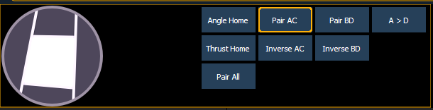
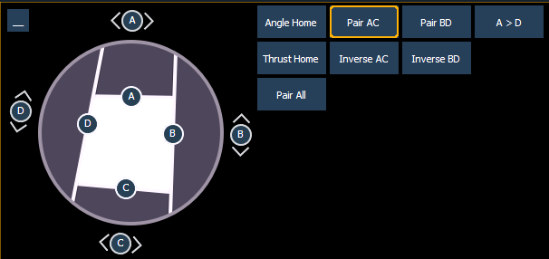

Pressing the [Shutter] button displays shutter controls, if there are any fixtures with framing devices patched.
Note: For Ion, ETCnomad, RPU, and RVI, the encoder display can be accessed by using CTRL + ALT +\ on an alphanumeric keyboard. ALT +,can be used to change encoder pages.
Tap or click on the shutter graphic to open up the shutter controls window.

The shutter controls window allows you to move individual shutters by holding down one of the letters inside of the shutter graphic. To rotate the shutters, use the <A>, <B>, <C>, or <D> buttons around the outside of the shutter graphic.

Note: The encoder buttons are used with the encoders for shutter control. These buttons do not work with the shutter graphic control.
The following buttons are available for shutter control: